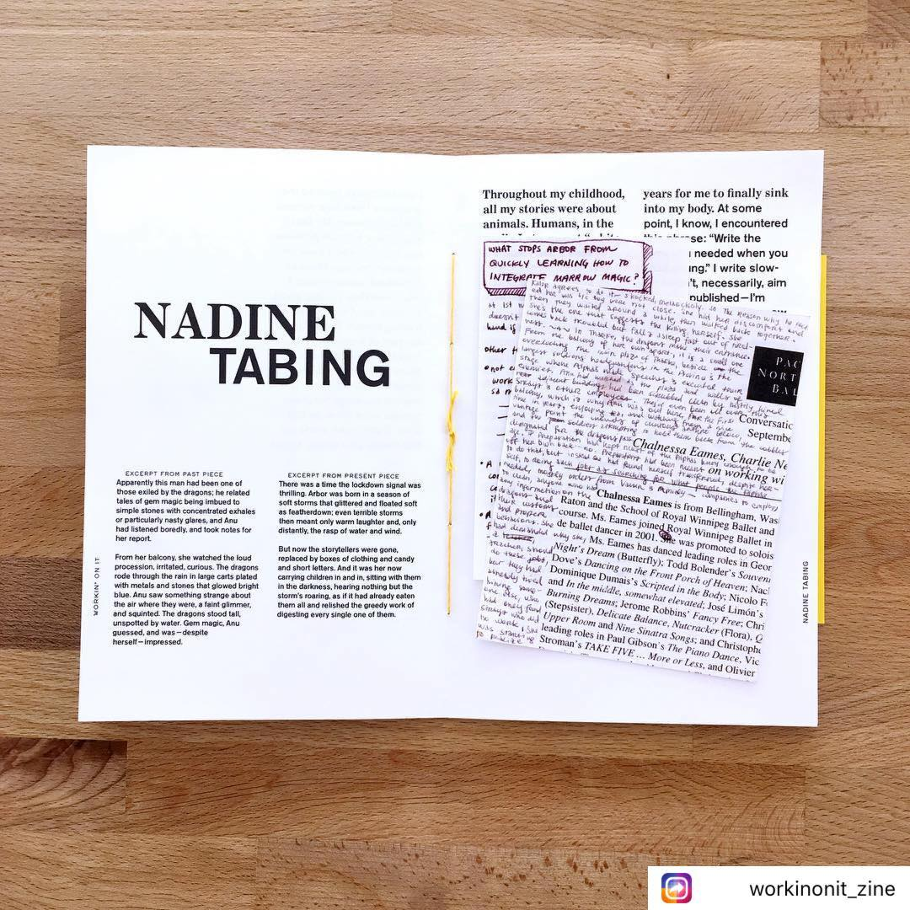

I write speculative short stories, flash, and am also working on one larger work. Below are my currently accessible works.
My work can also be found at UW's Speculative Arts & Lit Journal, and the Workin On It Zine.
An image of some of my writing in the Workin On It Zine